<title>② 覆盖审核</title>
<meta name="claude:viewport-fit-sides" content="cover">
<link rel="stylesheet" href="https://fonts.googleapis.com/css2?family=Noto+Sans+SC:wght@400;600&display=swap">
<style>
:root{--bg:#f7f8f6;--fg:#1f2428;--muted:#5f6870;--line:#d6dad8;--surface:#eceeeb;--accent:#1d6f7a;
--green:#2ecc71;--orange:#ff9f1c;--red:#eb3b3b;color-scheme:light}
@media (prefers-color-scheme:dark){:root:not([data-theme="light"]){--bg:#15191c;--fg:#e6e9eb;--muted:#a9b2b9;--line:#3b4349;--surface:#20262a;--accent:#7fd3dc;color-scheme:dark}}
:root[data-theme="dark"]{--bg:#15191c;--fg:#e6e9eb;--muted:#a9b2b9;--line:#3b4349;--surface:#20262a;--accent:#7fd3dc;color-scheme:dark}
*{box-sizing:border-box}
body{margin:0;background:var(--bg);color:var(--fg);font:15px/1.7 "Noto Sans SC",system-ui,-apple-system,"PingFang SC",sans-serif;
padding-left:max(16px,env(safe-area-inset-left,0px));padding-right:max(16px,env(safe-area-inset-right,0px));padding-block:24px 64px}
main{max-width:1240px;margin:0 auto;min-width:0}
h1{font-size:26px;margin:0 0 6px;text-wrap:balance}h2{font-size:19px;margin:28px 0 8px}
p{max-width:90ch;margin:6px 0}.muted{color:var(--muted);font-size:14px}
nav{display:flex;gap:18px;border-bottom:1px solid var(--line);margin:18px 0 8px}
nav a{color:var(--fg);text-decoration:none;padding:8px 2px;border-bottom:3px solid transparent;font-weight:600}
nav a[aria-selected="true"]{border-color:var(--accent);color:var(--accent)}
.legend{display:flex;flex-wrap:wrap;gap:6px 18px;font-size:14px;margin:8px 0}
.dot{display:inline-block;width:12px;height:12px;border-radius:2px;margin-right:6px;vertical-align:-1px}
.dot.green{background:var(--green)}.dot.orange{background:var(--orange)}.dot.red{background:var(--red)}
.dot.cand{background:#c8c8c8}.dot.det{background:transparent;border:2px solid var(--fg)}
.stats{font-variant-numeric:tabular-nums;font-size:15px;background:var(--surface);padding:10px 14px;border-radius:6px;margin:10px 0}
.row{border-top:1px solid var(--line);padding:14px 0 6px}
.imgs{display:grid;grid-template-columns:repeat(3,minmax(0,1fr));gap:8px}
.imgs figure{margin:0;min-width:0}.imgs img{width:100%;max-width:100%;height:auto;display:block;image-rendering:auto}
figcaption{font-size:13px;color:var(--muted)}
.scroll{max-width:100%;overflow-x:auto;margin-top:8px}
table{border-collapse:collapse;font-variant-numeric:tabular-nums;font-size:14px}
th,td{padding:4px 12px;border-bottom:1px solid var(--line);text-align:right;white-space:nowrap}
th:first-child,td:first-child{text-align:left}
.far{font-size:12px;color:var(--accent);border:1px solid var(--accent);border-radius:3px;padding:0 3px;margin-left:4px}
a:focus-visible{outline:2px solid var(--accent);outline-offset:2px}
@media (max-width:640px){.imgs{grid-template-columns:minmax(0,1fr)}}
</style>
<main>
<h1>② 漏检覆盖审核</h1>
<p>每张测试图在 T2 上标出全部 ② 漏检目标（无信号·孤立），颜色表示过滤后的补漏候选盖住了它多少。点击图片看原分辨率。</p>
<div class="legend"><span><span class="dot green"></span>覆盖 ≥ 50%（算覆盖）</span><span><span class="dot orange"></span>覆盖 0–50%</span>
<span><span class="dot red"></span>完全没盖住</span><span><span class="dot cand"></span>补漏候选（过滤后）</span><span><span class="dot det"></span>检测结果 D 轮廓</span></div>
<p class="muted">每个数据集抽 10 张含 ② 的测试图（种子 20261026）：② 目标多的 3 张、少的 3 张、含大块 ② 的 2 张、随机 2 张。“远”表示到 D 的距离大于 5 像素。</p>
<nav><a href="#second" data-tab="second">SECOND</a><a href="#sysu" data-tab="sysu">SYSU</a></nav>
<section id="sec-second" data-ds="second"><p class="stats">SECOND 测试部分（过滤方案 F3A200）：② 目标 11,675 个，被候选覆盖 6,569 个，占 56.3%；每图补漏候选 94.0 个。</p><div class="row"><h3>test_1004.png <span class="muted">· ② 目标多 · ② 目标 9 个，覆盖 3 个</span></h3><div class="imgs"><figure><a href="exp8s6_images/second/test_1004-t1.jpg" target="_blank" rel="noopener">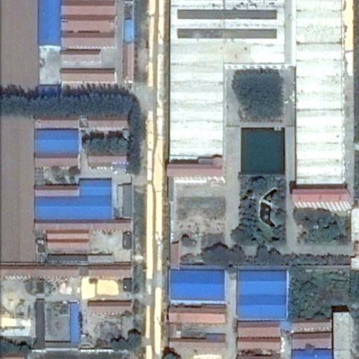</a><figcaption>T1</figcaption></figure><figure><a href="exp8s6_images/second/test_1004-t2.jpg" target="_blank" rel="noopener">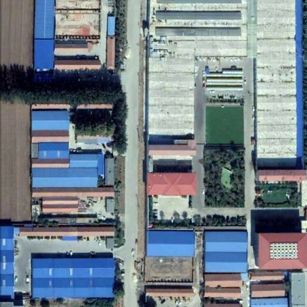</a><figcaption>T2</figcaption></figure><figure><a href="exp8s6_images/second/test_1004-overlay.jpg" target="_blank" rel="noopener">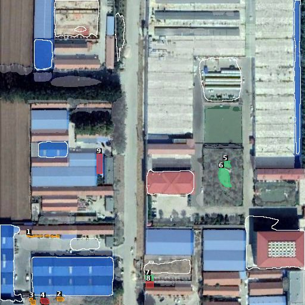</a><figcaption>T2 叠加</figcaption></figure></div><div class="scroll"><table><thead><tr><th>编号</th><th>面积（像素）</th><th>到 D 的距离（像素）</th><th>被候选覆盖</th><th>算覆盖</th></tr></thead><tbody>
<tr><td><span class="dot orange"></span>1</td><td>150</td><td>11 <span class="far" title="距离 > 5 像素">远</span></td><td>1%</td><td>否</td></tr>
<tr><td><span class="dot orange"></span>2</td><td>94</td><td>3</td><td>14%</td><td>否</td></tr>
<tr><td><span class="dot orange"></span>3</td><td>97</td><td>5</td><td>20%</td><td>否</td></tr>
<tr><td><span class="dot red"></span>4</td><td>136</td><td>5</td><td>0%</td><td>否</td></tr>
<tr><td><span class="dot green"></span>5</td><td>123</td><td>49 <span class="far" title="距离 > 5 像素">远</span></td><td>100%</td><td>是</td></tr>
<tr><td><span class="dot green"></span>6</td><td>491</td><td>42 <span class="far" title="距离 > 5 像素">远</span></td><td>100%</td><td>是</td></tr>
<tr><td><span class="dot green"></span>7</td><td>126</td><td>4</td><td>89%</td><td>是</td></tr>
<tr><td><span class="dot red"></span>8</td><td>143</td><td>14 <span class="far" title="距离 > 5 像素">远</span></td><td>0%</td><td>否</td></tr>
<tr><td><span class="dot red"></span>9</td><td>340</td><td>49 <span class="far" title="距离 > 5 像素">远</span></td><td>0%</td><td>否</td></tr>
</tbody></table></div></div><div class="row"><h3>test_1078.png <span class="muted">· ② 目标多 · ② 目标 24 个，覆盖 11 个</span></h3><div class="imgs"><figure><a href="exp8s6_images/second/test_1078-t1.jpg" target="_blank" rel="noopener">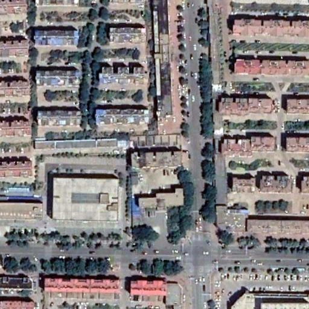</a><figcaption>T1</figcaption></figure><figure><a href="exp8s6_images/second/test_1078-t2.jpg" target="_blank" rel="noopener">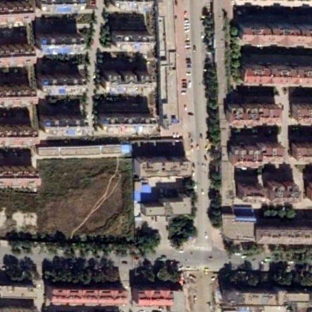</a><figcaption>T2</figcaption></figure><figure><a href="exp8s6_images/second/test_1078-overlay.jpg" target="_blank" rel="noopener">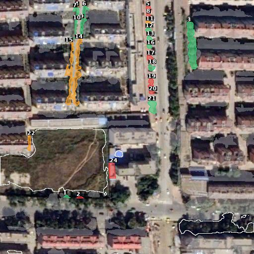</a><figcaption>T2 叠加</figcaption></figure></div><div class="scroll"><table><thead><tr><th>编号</th><th>面积（像素）</th><th>到 D 的距离（像素）</th><th>被候选覆盖</th><th>算覆盖</th></tr></thead><tbody>
<tr><td><span class="dot green"></span>1</td><td>50</td><td>9 <span class="far" title="距离 > 5 像素">远</span></td><td>72%</td><td>是</td></tr>
<tr><td><span class="dot red"></span>2</td><td>48</td><td>11 <span class="far" title="距离 > 5 像素">远</span></td><td>0%</td><td>否</td></tr>
<tr><td><span class="dot green"></span>3</td><td>1,299</td><td>165 <span class="far" title="距离 > 5 像素">远</span></td><td>92%</td><td>是</td></tr>
<tr><td><span class="dot orange"></span>4</td><td>51</td><td>246 <span class="far" title="距离 > 5 像素">远</span></td><td>33%</td><td>否</td></tr>
<tr><td><span class="dot red"></span>5</td><td>81</td><td>238 <span class="far" title="距离 > 5 像素">远</span></td><td>0%</td><td>否</td></tr>
<tr><td><span class="dot green"></span>6</td><td>157</td><td>225 <span class="far" title="距离 > 5 像素">远</span></td><td>92%</td><td>是</td></tr>
<tr><td><span class="dot green"></span>7</td><td>147</td><td>224 <span class="far" title="距离 > 5 像素">远</span></td><td>97%</td><td>是</td></tr>
<tr><td><span class="dot red"></span>8</td><td>72</td><td>223 <span class="far" title="距离 > 5 像素">远</span></td><td>0%</td><td>否</td></tr>
<tr><td><span class="dot green"></span>9</td><td>226</td><td>187 <span class="far" title="距离 > 5 像素">远</span></td><td>54%</td><td>是</td></tr>
<tr><td><span class="dot green"></span>10</td><td>107</td><td>180 <span class="far" title="距离 > 5 像素">远</span></td><td>84%</td><td>是</td></tr>
<tr><td><span class="dot orange"></span>11</td><td>111</td><td>206 <span class="far" title="距离 > 5 像素">远</span></td><td>32%</td><td>否</td></tr>
<tr><td><span class="dot green"></span>12</td><td>131</td><td>189 <span class="far" title="距离 > 5 像素">远</span></td><td>94%</td><td>是</td></tr>
<tr><td><span class="dot green"></span>13</td><td>143</td><td>172 <span class="far" title="距离 > 5 像素">远</span></td><td>97%</td><td>是</td></tr>
<tr><td><span class="dot orange"></span>14</td><td>470</td><td>118 <span class="far" title="距离 > 5 像素">远</span></td><td>36%</td><td>否</td></tr>
<tr><td><span class="dot orange"></span>15</td><td>1,418</td><td>46 <span class="far" title="距离 > 5 像素">远</span></td><td>11%</td><td>否</td></tr>
<tr><td><span class="dot green"></span>16</td><td>70</td><td>161 <span class="far" title="距离 > 5 像素">远</span></td><td>57%</td><td>是</td></tr>
<tr><td><span class="dot red"></span>17</td><td>133</td><td>136 <span class="far" title="距离 > 5 像素">远</span></td><td>0%</td><td>否</td></tr>
<tr><td><span class="dot green"></span>18</td><td>127</td><td>117 <span class="far" title="距离 > 5 像素">远</span></td><td>91%</td><td>是</td></tr>
<tr><td><span class="dot red"></span>19</td><td>216</td><td>89 <span class="far" title="距离 > 5 像素">远</span></td><td>0%</td><td>否</td></tr>
<tr><td><span class="dot red"></span>20</td><td>67</td><td>88 <span class="far" title="距离 > 5 像素">远</span></td><td>0%</td><td>否</td></tr>
<tr><td><span class="dot green"></span>21</td><td>350</td><td>75 <span class="far" title="距离 > 5 像素">远</span></td><td>82%</td><td>是</td></tr>
<tr><td><span class="dot orange"></span>22</td><td>175</td><td>3</td><td>41%</td><td>否</td></tr>
<tr><td><span class="dot red"></span>23</td><td>48</td><td>2</td><td>0%</td><td>否</td></tr>
<tr><td><span class="dot red"></span>24</td><td>363</td><td>4</td><td>0%</td><td>否</td></tr>
</tbody></table></div></div><div class="row"><h3>test_1501.png <span class="muted">· ② 目标多 · ② 目标 10 个，覆盖 8 个</span></h3><div class="imgs"><figure><a href="exp8s6_images/second/test_1501-t1.jpg" target="_blank" rel="noopener">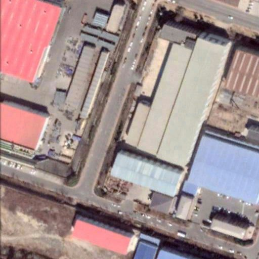</a><figcaption>T1</figcaption></figure><figure><a href="exp8s6_images/second/test_1501-t2.jpg" target="_blank" rel="noopener">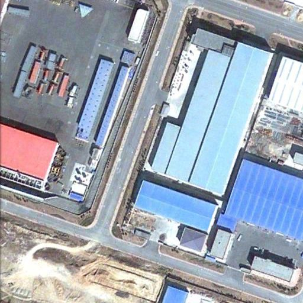</a><figcaption>T2</figcaption></figure><figure><a href="exp8s6_images/second/test_1501-overlay.jpg" target="_blank" rel="noopener">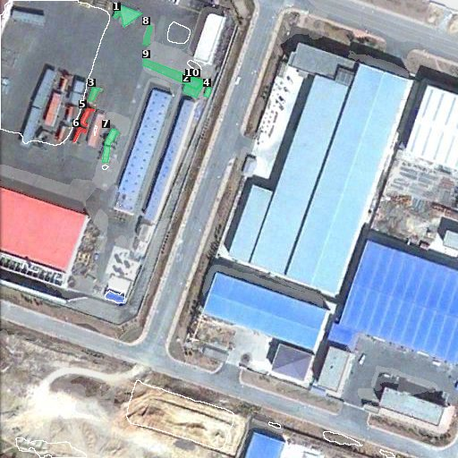</a><figcaption>T2 叠加</figcaption></figure></div><div class="scroll"><table><thead><tr><th>编号</th><th>面积（像素）</th><th>到 D 的距离（像素）</th><th>被候选覆盖</th><th>算覆盖</th></tr></thead><tbody>
<tr><td><span class="dot green"></span>1</td><td>386</td><td>4</td><td>87%</td><td>是</td></tr>
<tr><td><span class="dot green"></span>2</td><td>205</td><td>14 <span class="far" title="距离 > 5 像素">远</span></td><td>100%</td><td>是</td></tr>
<tr><td><span class="dot green"></span>3</td><td>123</td><td>4</td><td>100%</td><td>是</td></tr>
<tr><td><span class="dot green"></span>4</td><td>70</td><td>19 <span class="far" title="距离 > 5 像素">远</span></td><td>99%</td><td>是</td></tr>
<tr><td><span class="dot red"></span>5</td><td>139</td><td>3</td><td>0%</td><td>否</td></tr>
<tr><td><span class="dot red"></span>6</td><td>89</td><td>5</td><td>0%</td><td>否</td></tr>
<tr><td><span class="dot green"></span>7</td><td>306</td><td>3</td><td>62%</td><td>是</td></tr>
<tr><td><span class="dot green"></span>8</td><td>138</td><td>17 <span class="far" title="距离 > 5 像素">远</span></td><td>95%</td><td>是</td></tr>
<tr><td><span class="dot green"></span>9</td><td>553</td><td>7 <span class="far" title="距离 > 5 像素">远</span></td><td>100%</td><td>是</td></tr>
<tr><td><span class="dot green"></span>10</td><td>144</td><td>9 <span class="far" title="距离 > 5 像素">远</span></td><td>100%</td><td>是</td></tr>
</tbody></table></div></div><div class="row"><h3>test_420.png <span class="muted">· ② 目标少 · ② 目标 2 个，覆盖 2 个</span></h3><div class="imgs"><figure><a href="exp8s6_images/second/test_420-t1.jpg" target="_blank" rel="noopener">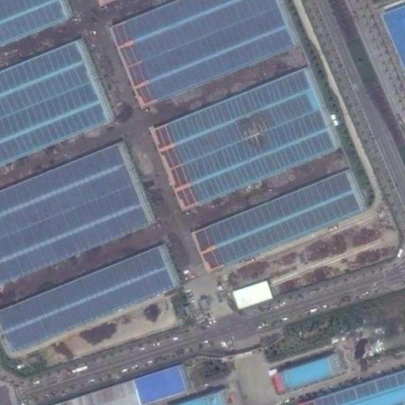</a><figcaption>T1</figcaption></figure><figure><a href="exp8s6_images/second/test_420-t2.jpg" target="_blank" rel="noopener">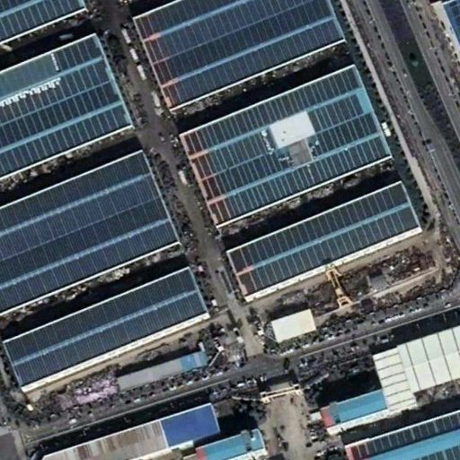</a><figcaption>T2</figcaption></figure><figure><a href="exp8s6_images/second/test_420-overlay.jpg" target="_blank" rel="noopener">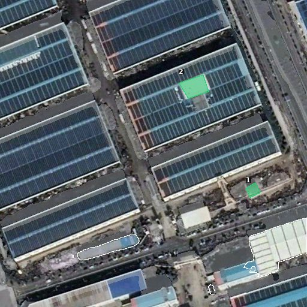</a><figcaption>T2 叠加</figcaption></figure></div><div class="scroll"><table><thead><tr><th>编号</th><th>面积（像素）</th><th>到 D 的距离（像素）</th><th>被候选覆盖</th><th>算覆盖</th></tr></thead><tbody>
<tr><td><span class="dot green"></span>1</td><td>372</td><td>47 <span class="far" title="距离 > 5 像素">远</span></td><td>82%</td><td>是</td></tr>
<tr><td><span class="dot green"></span>2</td><td>1,242</td><td>199 <span class="far" title="距离 > 5 像素">远</span></td><td>94%</td><td>是</td></tr>
</tbody></table></div></div><div class="row"><h3>test_1453.png <span class="muted">· ② 目标少 · ② 目标 1 个，覆盖 1 个</span></h3><div class="imgs"><figure><a href="exp8s6_images/second/test_1453-t1.jpg" target="_blank" rel="noopener">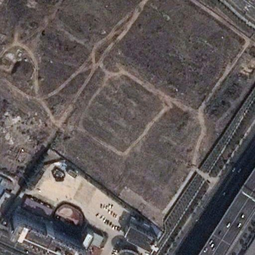</a><figcaption>T1</figcaption></figure><figure><a href="exp8s6_images/second/test_1453-t2.jpg" target="_blank" rel="noopener">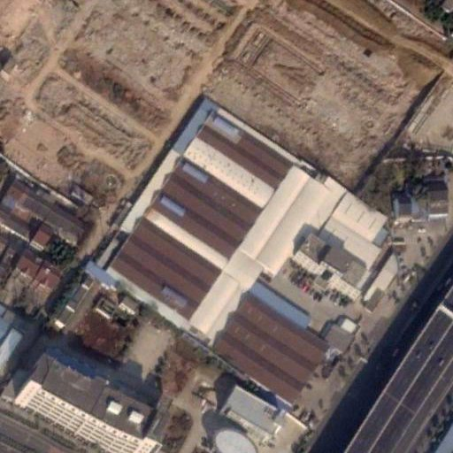</a><figcaption>T2</figcaption></figure><figure><a href="exp8s6_images/second/test_1453-overlay.jpg" target="_blank" rel="noopener">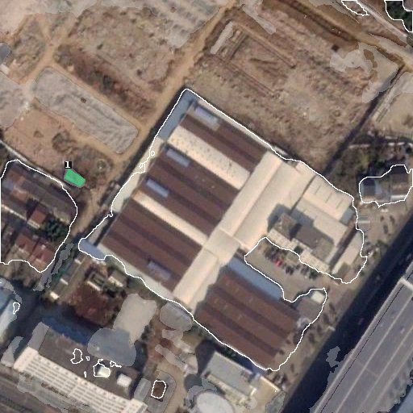</a><figcaption>T2 叠加</figcaption></figure></div><div class="scroll"><table><thead><tr><th>编号</th><th>面积（像素）</th><th>到 D 的距离（像素）</th><th>被候选覆盖</th><th>算覆盖</th></tr></thead><tbody>
<tr><td><span class="dot green"></span>1</td><td>268</td><td>6 <span class="far" title="距离 > 5 像素">远</span></td><td>100%</td><td>是</td></tr>
</tbody></table></div></div><div class="row"><h3>test_1014.png <span class="muted">· ② 目标少 · ② 目标 3 个，覆盖 1 个</span></h3><div class="imgs"><figure><a href="exp8s6_images/second/test_1014-t1.jpg" target="_blank" rel="noopener">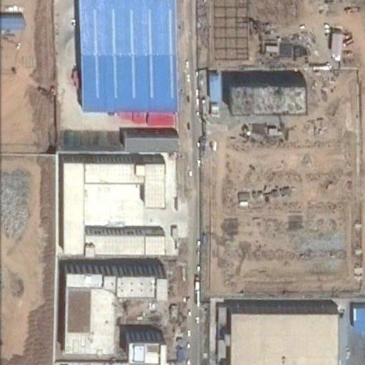</a><figcaption>T1</figcaption></figure><figure><a href="exp8s6_images/second/test_1014-t2.jpg" target="_blank" rel="noopener">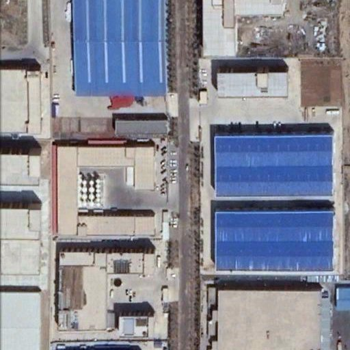</a><figcaption>T2</figcaption></figure><figure><a href="exp8s6_images/second/test_1014-overlay.jpg" target="_blank" rel="noopener">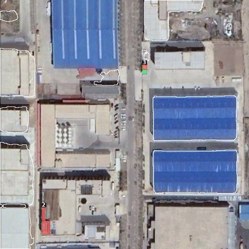</a><figcaption>T2 叠加</figcaption></figure></div><div class="scroll"><table><thead><tr><th>编号</th><th>面积（像素）</th><th>到 D 的距离（像素）</th><th>被候选覆盖</th><th>算覆盖</th></tr></thead><tbody>
<tr><td><span class="dot green"></span>1</td><td>100</td><td>5</td><td>79%</td><td>是</td></tr>
<tr><td><span class="dot red"></span>2</td><td>631</td><td>18 <span class="far" title="距离 > 5 像素">远</span></td><td>0%</td><td>否</td></tr>
<tr><td><span class="dot red"></span>3</td><td>90</td><td>3</td><td>0%</td><td>否</td></tr>
</tbody></table></div></div><div class="row"><h3>test_1648.png <span class="muted">· 含大块 ② · ② 目标 14 个，覆盖 7 个</span></h3><div class="imgs"><figure><a href="exp8s6_images/second/test_1648-t1.jpg" target="_blank" rel="noopener">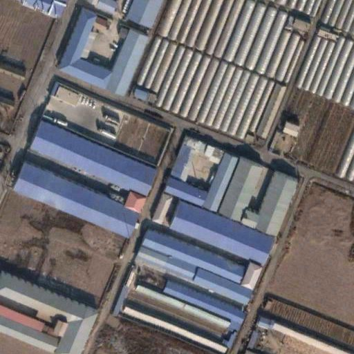</a><figcaption>T1</figcaption></figure><figure><a href="exp8s6_images/second/test_1648-t2.jpg" target="_blank" rel="noopener">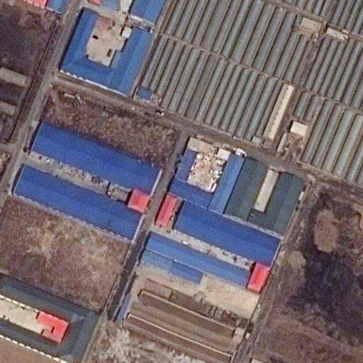</a><figcaption>T2</figcaption></figure><figure><a href="exp8s6_images/second/test_1648-overlay.jpg" target="_blank" rel="noopener">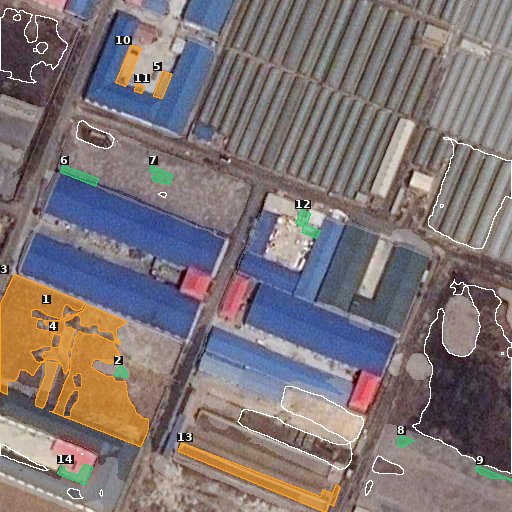</a><figcaption>T2 叠加</figcaption></figure></div><div class="scroll"><table><thead><tr><th>编号</th><th>面积（像素）</th><th>到 D 的距离（像素）</th><th>被候选覆盖</th><th>算覆盖</th></tr></thead><tbody>
<tr><td><span class="dot orange"></span>1</td><td>1,774</td><td>71 <span class="far" title="距离 > 5 像素">远</span></td><td>6%</td><td>否</td></tr>
<tr><td><span class="dot green"></span>2</td><td>120</td><td>73 <span class="far" title="距离 > 5 像素">远</span></td><td>93%</td><td>是</td></tr>
<tr><td><span class="dot orange"></span>3</td><td>5,360</td><td>37 <span class="far" title="距离 > 5 像素">远</span></td><td>9%</td><td>否</td></tr>
<tr><td><span class="dot orange"></span>4</td><td>5,589</td><td>20 <span class="far" title="距离 > 5 像素">远</span></td><td>9%</td><td>否</td></tr>
<tr><td><span class="dot orange"></span>5</td><td>297</td><td>41 <span class="far" title="距离 > 5 像素">远</span></td><td>40%</td><td>否</td></tr>
<tr><td><span class="dot green"></span>6</td><td>343</td><td>23 <span class="far" title="距离 > 5 像素">远</span></td><td>78%</td><td>是</td></tr>
<tr><td><span class="dot green"></span>7</td><td>273</td><td>8 <span class="far" title="距离 > 5 像素">远</span></td><td>100%</td><td>是</td></tr>
<tr><td><span class="dot green"></span>8</td><td>130</td><td>8 <span class="far" title="距离 > 5 像素">远</span></td><td>100%</td><td>是</td></tr>
<tr><td><span class="dot green"></span>9</td><td>196</td><td>3</td><td>100%</td><td>是</td></tr>
<tr><td><span class="dot orange"></span>10</td><td>508</td><td>36 <span class="far" title="距离 > 5 像素">远</span></td><td>1%</td><td>否</td></tr>
<tr><td><span class="dot orange"></span>11</td><td>79</td><td>38 <span class="far" title="距离 > 5 像素">远</span></td><td>8%</td><td>否</td></tr>
<tr><td><span class="dot green"></span>12</td><td>346</td><td>106 <span class="far" title="距离 > 5 像素">远</span></td><td>91%</td><td>是</td></tr>
<tr><td><span class="dot orange"></span>13</td><td>2,170</td><td>15 <span class="far" title="距离 > 5 像素">远</span></td><td>14%</td><td>否</td></tr>
<tr><td><span class="dot green"></span>14</td><td>385</td><td>5</td><td>71%</td><td>是</td></tr>
</tbody></table></div></div><div class="row"><h3>test_541.png <span class="muted">· 含大块 ② · ② 目标 19 个，覆盖 12 个</span></h3><div class="imgs"><figure><a href="exp8s6_images/second/test_541-t1.jpg" target="_blank" rel="noopener">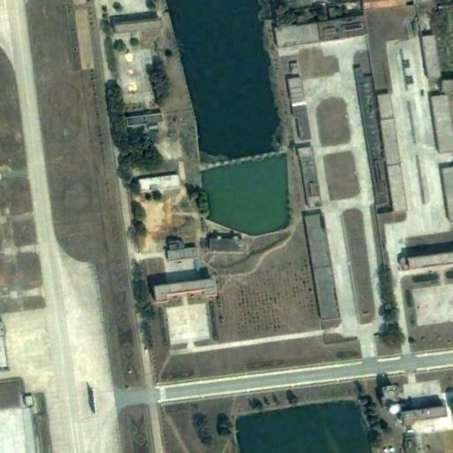</a><figcaption>T1</figcaption></figure><figure><a href="exp8s6_images/second/test_541-t2.jpg" target="_blank" rel="noopener">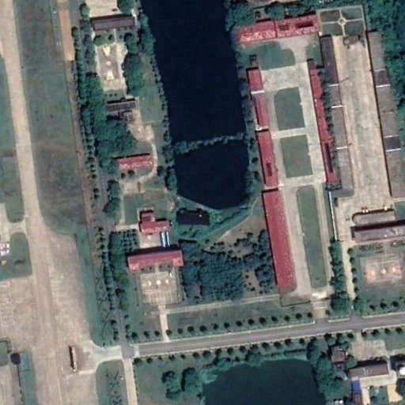</a><figcaption>T2</figcaption></figure><figure><a href="exp8s6_images/second/test_541-overlay.jpg" target="_blank" rel="noopener">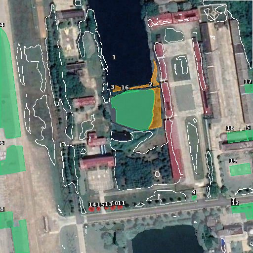</a><figcaption>T2 叠加</figcaption></figure></div><div class="scroll"><table><thead><tr><th>编号</th><th>面积（像素）</th><th>到 D 的距离（像素）</th><th>被候选覆盖</th><th>算覆盖</th></tr></thead><tbody>
<tr><td><span class="dot orange"></span>1</td><td>850</td><td>5</td><td>44%</td><td>否</td></tr>
<tr><td><span class="dot orange"></span>2</td><td>1,301</td><td>3</td><td>9%</td><td>否</td></tr>
<tr><td><span class="dot green"></span>3</td><td>5,651</td><td>2</td><td>99%</td><td>是</td></tr>
<tr><td><span class="dot green"></span>4</td><td>6,155</td><td>10 <span class="far" title="距离 > 5 像素">远</span></td><td>98%</td><td>是</td></tr>
<tr><td><span class="dot green"></span>5</td><td>251</td><td>69 <span class="far" title="距离 > 5 像素">远</span></td><td>74%</td><td>是</td></tr>
<tr><td><span class="dot green"></span>6</td><td>2,253</td><td>25 <span class="far" title="距离 > 5 像素">远</span></td><td>96%</td><td>是</td></tr>
<tr><td><span class="dot green"></span>7</td><td>584</td><td>17 <span class="far" title="距离 > 5 像素">远</span></td><td>86%</td><td>是</td></tr>
<tr><td><span class="dot green"></span>8</td><td>2,620</td><td>61 <span class="far" title="距离 > 5 像素">远</span></td><td>97%</td><td>是</td></tr>
<tr><td><span class="dot green"></span>9</td><td>73</td><td>11 <span class="far" title="距离 > 5 像素">远</span></td><td>79%</td><td>是</td></tr>
<tr><td><span class="dot red"></span>10</td><td>66</td><td>28 <span class="far" title="距离 > 5 像素">远</span></td><td>0%</td><td>否</td></tr>
<tr><td><span class="dot red"></span>11</td><td>62</td><td>14 <span class="far" title="距离 > 5 像素">远</span></td><td>0%</td><td>否</td></tr>
<tr><td><span class="dot green"></span>12</td><td>354</td><td>22 <span class="far" title="距离 > 5 像素">远</span></td><td>100%</td><td>是</td></tr>
<tr><td><span class="dot red"></span>13</td><td>25</td><td>34 <span class="far" title="距离 > 5 像素">远</span></td><td>0%</td><td>否</td></tr>
<tr><td><span class="dot red"></span>14</td><td>89</td><td>5</td><td>0%</td><td>否</td></tr>
<tr><td><span class="dot red"></span>15</td><td>44</td><td>22 <span class="far" title="距离 > 5 像素">远</span></td><td>0%</td><td>否</td></tr>
<tr><td><span class="dot green"></span>16</td><td>119</td><td>22 <span class="far" title="距离 > 5 像素">远</span></td><td>67%</td><td>是</td></tr>
<tr><td><span class="dot green"></span>17</td><td>288</td><td>32 <span class="far" title="距离 > 5 像素">远</span></td><td>68%</td><td>是</td></tr>
<tr><td><span class="dot green"></span>18</td><td>844</td><td>34 <span class="far" title="距离 > 5 像素">远</span></td><td>75%</td><td>是</td></tr>
<tr><td><span class="dot green"></span>19</td><td>871</td><td>25 <span class="far" title="距离 > 5 像素">远</span></td><td>100%</td><td>是</td></tr>
</tbody></table></div></div><div class="row"><h3>test_646.png <span class="muted">· 随机 · ② 目标 10 个，覆盖 9 个</span></h3><div class="imgs"><figure><a href="exp8s6_images/second/test_646-t1.jpg" target="_blank" rel="noopener">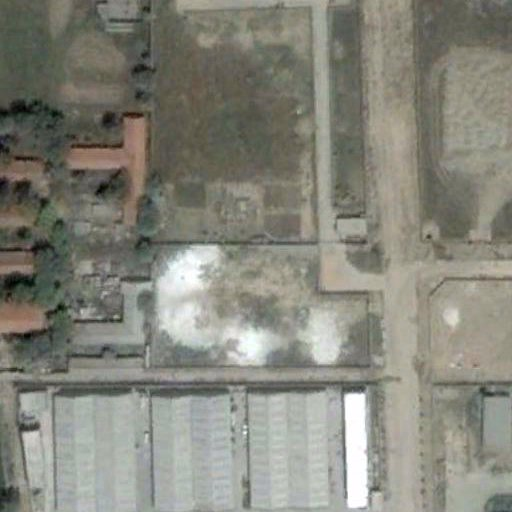</a><figcaption>T1</figcaption></figure><figure><a href="exp8s6_images/second/test_646-t2.jpg" target="_blank" rel="noopener">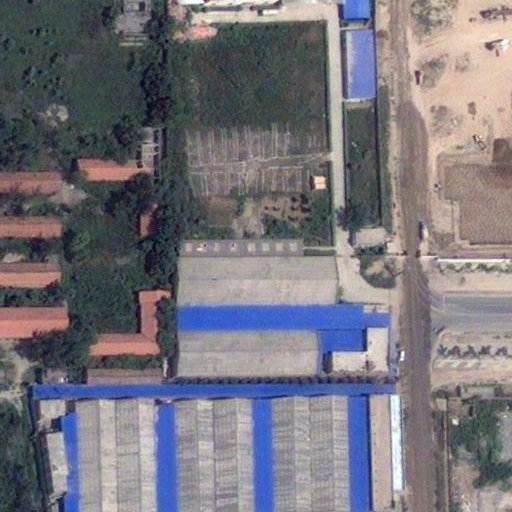</a><figcaption>T2</figcaption></figure><figure><a href="exp8s6_images/second/test_646-overlay.jpg" target="_blank" rel="noopener">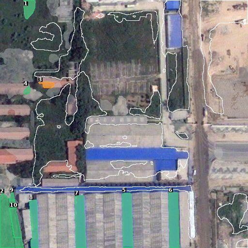</a><figcaption>T2 叠加</figcaption></figure></div><div class="scroll"><table><thead><tr><th>编号</th><th>面积（像素）</th><th>到 D 的距离（像素）</th><th>被候选覆盖</th><th>算覆盖</th></tr></thead><tbody>
<tr><td><span class="dot green"></span>1</td><td>749</td><td>23 <span class="far" title="距离 > 5 像素">远</span></td><td>97%</td><td>是</td></tr>
<tr><td><span class="dot green"></span>2</td><td>3,242</td><td>17 <span class="far" title="距离 > 5 像素">远</span></td><td>96%</td><td>是</td></tr>
<tr><td><span class="dot orange"></span>3</td><td>317</td><td>9 <span class="far" title="距离 > 5 像素">远</span></td><td>16%</td><td>否</td></tr>
<tr><td><span class="dot green"></span>4</td><td>171</td><td>19 <span class="far" title="距离 > 5 像素">远</span></td><td>100%</td><td>是</td></tr>
<tr><td><span class="dot green"></span>5</td><td>2,264</td><td>3</td><td>96%</td><td>是</td></tr>
<tr><td><span class="dot green"></span>6</td><td>2,306</td><td>5</td><td>100%</td><td>是</td></tr>
<tr><td><span class="dot green"></span>7</td><td>2,116</td><td>8 <span class="far" title="距离 > 5 像素">远</span></td><td>96%</td><td>是</td></tr>
<tr><td><span class="dot green"></span>8</td><td>1,445</td><td>15 <span class="far" title="距离 > 5 像素">远</span></td><td>96%</td><td>是</td></tr>
<tr><td><span class="dot green"></span>9</td><td>121</td><td>12 <span class="far" title="距离 > 5 像素">远</span></td><td>100%</td><td>是</td></tr>
<tr><td><span class="dot green"></span>10</td><td>875</td><td>32 <span class="far" title="距离 > 5 像素">远</span></td><td>100%</td><td>是</td></tr>
</tbody></table></div></div><div class="row"><h3>test_1182.png <span class="muted">· 随机 · ② 目标 1 个，覆盖 0 个</span></h3><div class="imgs"><figure><a href="exp8s6_images/second/test_1182-t1.jpg" target="_blank" rel="noopener">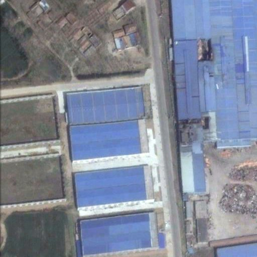</a><figcaption>T1</figcaption></figure><figure><a href="exp8s6_images/second/test_1182-t2.jpg" target="_blank" rel="noopener">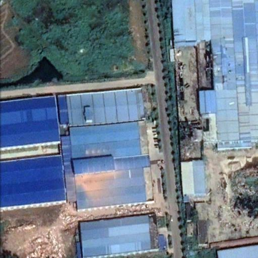</a><figcaption>T2</figcaption></figure><figure><a href="exp8s6_images/second/test_1182-overlay.jpg" target="_blank" rel="noopener">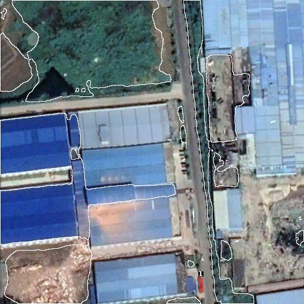</a><figcaption>T2 叠加</figcaption></figure></div><div class="scroll"><table><thead><tr><th>编号</th><th>面积（像素）</th><th>到 D 的距离（像素）</th><th>被候选覆盖</th><th>算覆盖</th></tr></thead><tbody>
<tr><td><span class="dot red"></span>1</td><td>172</td><td>9 <span class="far" title="距离 > 5 像素">远</span></td><td>0%</td><td>否</td></tr>
</tbody></table></div></div></section><section id="sec-sysu" data-ds="sysu"><p class="stats">SYSU 测试部分（过滤方案 F2）：② 目标 909 个，被候选覆盖 502 个，占 55.2%；每图补漏候选 11.8 个。</p><div class="row"><h3>test_679.png <span class="muted">· ② 目标多 · ② 目标 1 个，覆盖 1 个</span></h3><div class="imgs"><figure><a href="exp8s6_images/sysu/test_679-t1.jpg" target="_blank" rel="noopener">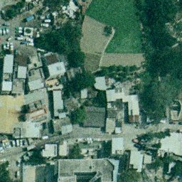</a><figcaption>T1</figcaption></figure><figure><a href="exp8s6_images/sysu/test_679-t2.jpg" target="_blank" rel="noopener">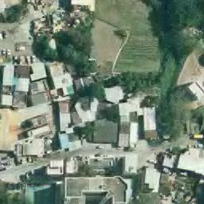</a><figcaption>T2</figcaption></figure><figure><a href="exp8s6_images/sysu/test_679-overlay.jpg" target="_blank" rel="noopener">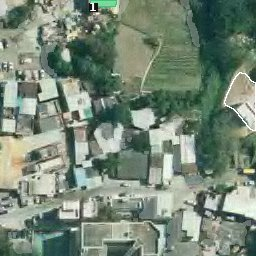</a><figcaption>T2 叠加</figcaption></figure></div><div class="scroll"><table><thead><tr><th>编号</th><th>面积（像素）</th><th>到 D 的距离（像素）</th><th>被候选覆盖</th><th>算覆盖</th></tr></thead><tbody>
<tr><td><span class="dot green"></span>1</td><td>190</td><td>108 <span class="far" title="距离 > 5 像素">远</span></td><td>98%</td><td>是</td></tr>
</tbody></table></div></div><div class="row"><h3>test_626.png <span class="muted">· ② 目标多 · ② 目标 2 个，覆盖 2 个</span></h3><div class="imgs"><figure><a href="exp8s6_images/sysu/test_626-t1.jpg" target="_blank" rel="noopener">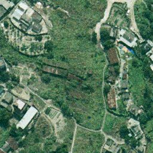</a><figcaption>T1</figcaption></figure><figure><a href="exp8s6_images/sysu/test_626-t2.jpg" target="_blank" rel="noopener">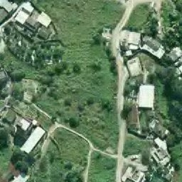</a><figcaption>T2</figcaption></figure><figure><a href="exp8s6_images/sysu/test_626-overlay.jpg" target="_blank" rel="noopener">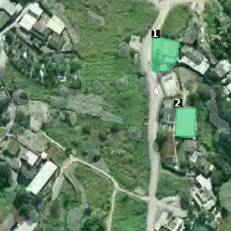</a><figcaption>T2 叠加</figcaption></figure></div><div class="scroll"><table><thead><tr><th>编号</th><th>面积（像素）</th><th>到 D 的距离（像素）</th><th>被候选覆盖</th><th>算覆盖</th></tr></thead><tbody>
<tr><td><span class="dot green"></span>1</td><td>974</td><td>20 <span class="far" title="距离 > 5 像素">远</span></td><td>96%</td><td>是</td></tr>
<tr><td><span class="dot green"></span>2</td><td>695</td><td>21 <span class="far" title="距离 > 5 像素">远</span></td><td>89%</td><td>是</td></tr>
</tbody></table></div></div><div class="row"><h3>test_764.png <span class="muted">· ② 目标多 · ② 目标 1 个，覆盖 1 个</span></h3><div class="imgs"><figure><a href="exp8s6_images/sysu/test_764-t1.jpg" target="_blank" rel="noopener">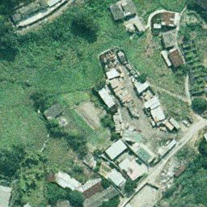</a><figcaption>T1</figcaption></figure><figure><a href="exp8s6_images/sysu/test_764-t2.jpg" target="_blank" rel="noopener">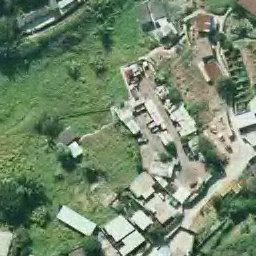</a><figcaption>T2</figcaption></figure><figure><a href="exp8s6_images/sysu/test_764-overlay.jpg" target="_blank" rel="noopener">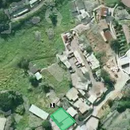</a><figcaption>T2 叠加</figcaption></figure></div><div class="scroll"><table><thead><tr><th>编号</th><th>面积（像素）</th><th>到 D 的距离（像素）</th><th>被候选覆盖</th><th>算覆盖</th></tr></thead><tbody>
<tr><td><span class="dot green"></span>1</td><td>1,233</td><td>87 <span class="far" title="距离 > 5 像素">远</span></td><td>70%</td><td>是</td></tr>
</tbody></table></div></div><div class="row"><h3>test_1922.png <span class="muted">· ② 目标少 · ② 目标 1 个，覆盖 0 个</span></h3><div class="imgs"><figure><a href="exp8s6_images/sysu/test_1922-t1.jpg" target="_blank" rel="noopener">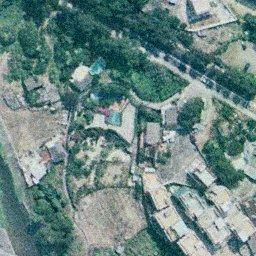</a><figcaption>T1</figcaption></figure><figure><a href="exp8s6_images/sysu/test_1922-t2.jpg" target="_blank" rel="noopener"></a><figcaption>T2</figcaption></figure><figure><a href="exp8s6_images/sysu/test_1922-overlay.jpg" target="_blank" rel="noopener">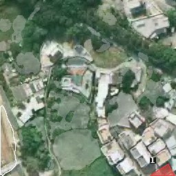</a><figcaption>T2 叠加</figcaption></figure></div><div class="scroll"><table><thead><tr><th>编号</th><th>面积（像素）</th><th>到 D 的距离（像素）</th><th>被候选覆盖</th><th>算覆盖</th></tr></thead><tbody>
<tr><td><span class="dot red"></span>1</td><td>349</td><td>187 <span class="far" title="距离 > 5 像素">远</span></td><td>0%</td><td>否</td></tr>
</tbody></table></div></div><div class="row"><h3>test_1216.png <span class="muted">· ② 目标少 · ② 目标 1 个，覆盖 0 个</span></h3><div class="imgs"><figure><a href="exp8s6_images/sysu/test_1216-t1.jpg" target="_blank" rel="noopener">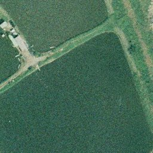</a><figcaption>T1</figcaption></figure><figure><a href="exp8s6_images/sysu/test_1216-t2.jpg" target="_blank" rel="noopener">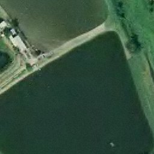</a><figcaption>T2</figcaption></figure><figure><a href="exp8s6_images/sysu/test_1216-overlay.jpg" target="_blank" rel="noopener">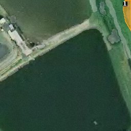</a><figcaption>T2 叠加</figcaption></figure></div><div class="scroll"><table><thead><tr><th>编号</th><th>面积（像素）</th><th>到 D 的距离（像素）</th><th>被候选覆盖</th><th>算覆盖</th></tr></thead><tbody>
<tr><td><span class="dot orange"></span>1</td><td>708</td><td>图内无 D <span class="far" title="距离 > 5 像素">远</span></td><td>46%</td><td>否</td></tr>
</tbody></table></div></div><div class="row"><h3>test_2089.png <span class="muted">· ② 目标少 · ② 目标 1 个，覆盖 1 个</span></h3><div class="imgs"><figure><a href="exp8s6_images/sysu/test_2089-t1.jpg" target="_blank" rel="noopener">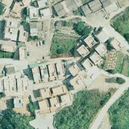</a><figcaption>T1</figcaption></figure><figure><a href="exp8s6_images/sysu/test_2089-t2.jpg" target="_blank" rel="noopener">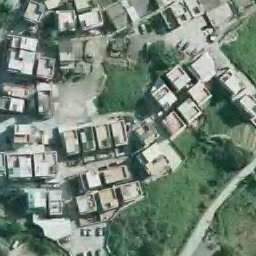</a><figcaption>T2</figcaption></figure><figure><a href="exp8s6_images/sysu/test_2089-overlay.jpg" target="_blank" rel="noopener">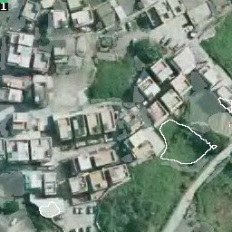</a><figcaption>T2 叠加</figcaption></figure></div><div class="scroll"><table><thead><tr><th>编号</th><th>面积（像素）</th><th>到 D 的距离（像素）</th><th>被候选覆盖</th><th>算覆盖</th></tr></thead><tbody>
<tr><td><span class="dot green"></span>1</td><td>56</td><td>168 <span class="far" title="距离 > 5 像素">远</span></td><td>100%</td><td>是</td></tr>
</tbody></table></div></div><div class="row"><h3>test_3474.png <span class="muted">· 含大块 ② · ② 目标 1 个，覆盖 1 个</span></h3><div class="imgs"><figure><a href="exp8s6_images/sysu/test_3474-t1.jpg" target="_blank" rel="noopener">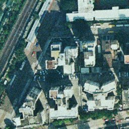</a><figcaption>T1</figcaption></figure><figure><a href="exp8s6_images/sysu/test_3474-t2.jpg" target="_blank" rel="noopener">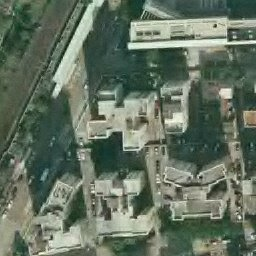</a><figcaption>T2</figcaption></figure><figure><a href="exp8s6_images/sysu/test_3474-overlay.jpg" target="_blank" rel="noopener">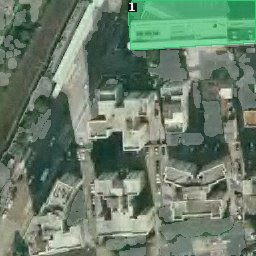</a><figcaption>T2 叠加</figcaption></figure></div><div class="scroll"><table><thead><tr><th>编号</th><th>面积（像素）</th><th>到 D 的距离（像素）</th><th>被候选覆盖</th><th>算覆盖</th></tr></thead><tbody>
<tr><td><span class="dot green"></span>1</td><td>5,921</td><td>图内无 D <span class="far" title="距离 > 5 像素">远</span></td><td>64%</td><td>是</td></tr>
</tbody></table></div></div><div class="row"><h3>test_735.png <span class="muted">· 含大块 ② · ② 目标 1 个，覆盖 0 个</span></h3><div class="imgs"><figure><a href="exp8s6_images/sysu/test_735-t1.jpg" target="_blank" rel="noopener"></a><figcaption>T1</figcaption></figure><figure><a href="exp8s6_images/sysu/test_735-t2.jpg" target="_blank" rel="noopener"></a><figcaption>T2</figcaption></figure><figure><a href="exp8s6_images/sysu/test_735-overlay.jpg" target="_blank" rel="noopener"></a><figcaption>T2 叠加</figcaption></figure></div><div class="scroll"><table><thead><tr><th>编号</th><th>面积（像素）</th><th>到 D 的距离（像素）</th><th>被候选覆盖</th><th>算覆盖</th></tr></thead><tbody>
<tr><td><span class="dot orange"></span>1</td><td>7,458</td><td>75 <span class="far" title="距离 > 5 像素">远</span></td><td>23%</td><td>否</td></tr>
</tbody></table></div></div><div class="row"><h3>test_477.png <span class="muted">· 随机 · ② 目标 1 个，覆盖 0 个</span></h3><div class="imgs"><figure><a href="exp8s6_images/sysu/test_477-t1.jpg" target="_blank" rel="noopener"></a><figcaption>T1</figcaption></figure><figure><a href="exp8s6_images/sysu/test_477-t2.jpg" target="_blank" rel="noopener"></a><figcaption>T2</figcaption></figure><figure><a href="exp8s6_images/sysu/test_477-overlay.jpg" target="_blank" rel="noopener"></a><figcaption>T2 叠加</figcaption></figure></div><div class="scroll"><table><thead><tr><th>编号</th><th>面积（像素）</th><th>到 D 的距离（像素）</th><th>被候选覆盖</th><th>算覆盖</th></tr></thead><tbody>
<tr><td><span class="dot orange"></span>1</td><td>1,044</td><td>26 <span class="far" title="距离 > 5 像素">远</span></td><td>39%</td><td>否</td></tr>
</tbody></table></div></div><div class="row"><h3>test_1380.png <span class="muted">· 随机 · ② 目标 1 个，覆盖 1 个</span></h3><div class="imgs"><figure><a href="exp8s6_images/sysu/test_1380-t1.jpg" target="_blank" rel="noopener"></a><figcaption>T1</figcaption></figure><figure><a href="exp8s6_images/sysu/test_1380-t2.jpg" target="_blank" rel="noopener"></a><figcaption>T2</figcaption></figure><figure><a href="exp8s6_images/sysu/test_1380-overlay.jpg" target="_blank" rel="noopener"></a><figcaption>T2 叠加</figcaption></figure></div><div class="scroll"><table><thead><tr><th>编号</th><th>面积（像素）</th><th>到 D 的距离（像素）</th><th>被候选覆盖</th><th>算覆盖</th></tr></thead><tbody>
<tr><td><span class="dot green"></span>1</td><td>692</td><td>图内无 D <span class="far" title="距离 > 5 像素">远</span></td><td>84%</td><td>是</td></tr>
</tbody></table></div></div></section>
</main>
<script>
(function(){
  var secs=document.querySelectorAll('section[data-ds]'), links=document.querySelectorAll('nav a');
  function show(ds){secs.forEach(function(s){s.hidden=s.dataset.ds!==ds});links.forEach(function(a){a.setAttribute('aria-selected',a.dataset.tab===ds)})}
  links.forEach(function(a){a.addEventListener('click',function(e){e.preventDefault();show(a.dataset.tab);history.replaceState(null,'','#'+a.dataset.tab)})});
  var h=location.hash.slice(1); show(h==='sysu'?'sysu':'second');
})();
</script>
